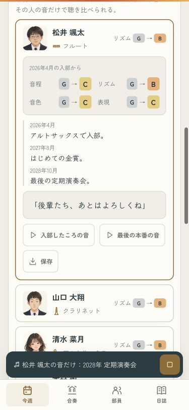
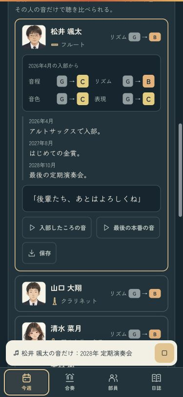

本人の録音を、安心して聴き比べる
入部したころと最後の本番を、同じ部員の音で聴き比べる。停止した後や全員の録音へ切り替えた後も、本人だけの指定が残ってしまう不具合を直しました。
| 操作 | 切り替え後 |
|---|
| 読み込み待ちで止める | 後から勝手に鳴らない |
| 本人から全員の録音へ | 39人で再生 |
| 別の本人へ | 新しく選んだ本人だけ |
| 卒業式 | 引退後も当時の39人で再生 |
録音の聴き比べを試す · 操作の確認記録
確認ページは本物のセーブと設定を変更しません。iPhoneへのインストールは成功。端末のロックにより、実機での表示と音は未確認です。
本人の音を聴く・ライト
本人の音を聴く・ダーク